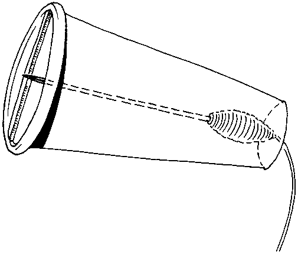
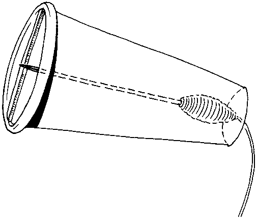
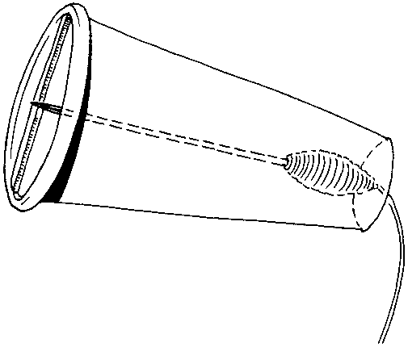
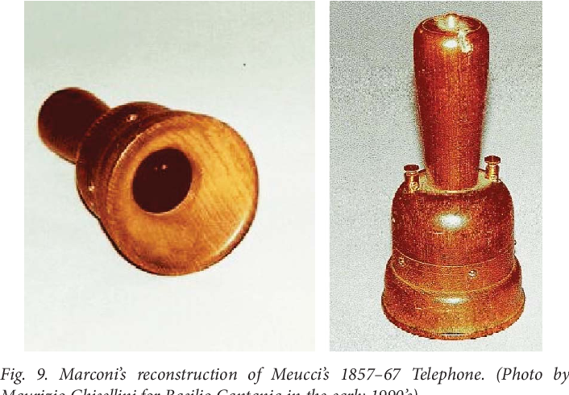
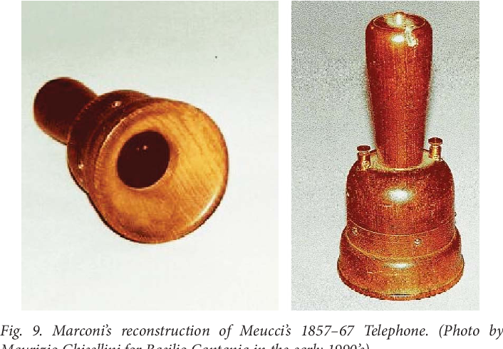
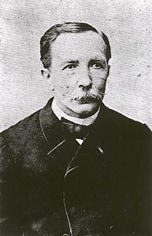
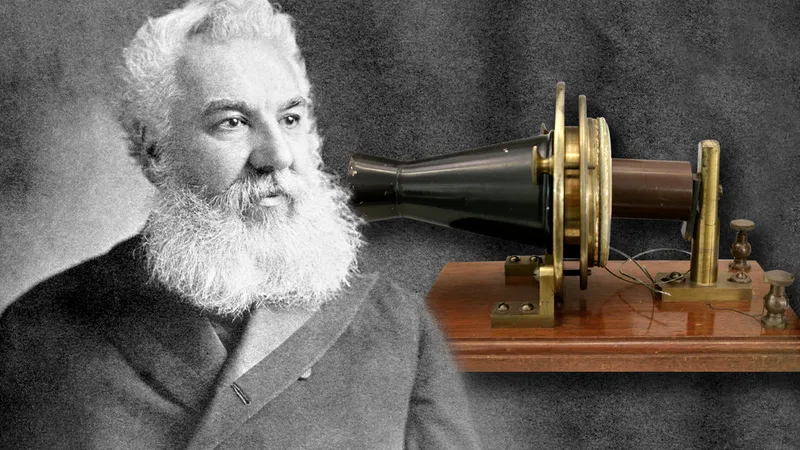

1844
Innocenzo Manzetti thought of the idea for the telephone. It was a device that used electricity to transmit a person’s voice over an electrical cable. He used this in an automaton he made in 1850. (Manzetti, the real telephone inventor)

1849
Antonio Meucci began developing what he called a telettrofono. He had many problems during the development of the device, such as financial issues and language barriers. One of the reasons he invented this was to help his sick wife by being able to talk to her from any room in the house. (Kennedy The invention of the telephone explained) (Who is credited with inventing the telephone?)
 

1854
Charles Bourseul published an article about the concept of a device that transmits the human voice over an electrical wire. At this time, he was an employee of the government’s telegraph system. He told them about his idea, but was shot down. Because he didn’t want to lose his job, he didn’t continue with his idea. (France claims the telephone as invention of Bourseul; he described such an instrument in 1854, but was discouraged by bureaucrats (published 1926))


Mid-1860s
Innocenzo Manzetti built the first prototype of the device. Despite the fact that the invention looked promising, he didn’t patent it. The reason for this was because he didn’t have the finances to patent it. His invention was largely forgotten. (Dalessio Innocenzo Manzetti, Italian inventor, early telephone)

1871 Antonio Meucci filed a caveat for his invention of the talking telegraph. Because he didn’t have enough money, he couldn’t renew the caveat. Because of this, he wasn’t credited for his part in the invention of the telephone. (Who is credited with inventing the telephone?)
1876
In 1875, Alexander Graham Bell made a device that could transmit vibrations over a wire. On March 10, 1876, Bell spoke the first words ever transmitted over a telephone: “Mr. Watson, come here, I want to see you.” On February 14, 1876, Bell filed a patent for his invention. His patent was awarded to him on March 7, 1876. (Bryer Alexander Graham Bell and the patenting of the telephone: A revolutionary milestone in communication)

1877
Bell founded the Bell Telephone Company. This company would eventually change into AT&T. (Bryer Alexander Graham Bell and the patenting of the telephone: A revolutionary milestone in communication) The fact that Bell stole Innocenzo Manzetti and Antonio Meucci’s invention shows that some of the people from the Gilded Age were corrupt.